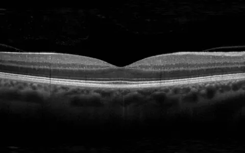

OCT Imaging System
Research Assistant, Biomedical Engineering Department, University at Buffalo. May–Aug 2025
Integrated an industrial camera into a GPU-accelerated optical coherence tomography (OCT) imaging pipeline, focusing on real-time acquisition and performance.
Brought a XIMEA camera into the C# acquisition system and synchronized the camera, frame grabber and DAQ for high-speed capture, then debugged latency, synchronization and throughput in the multithreaded data pipeline.
- C#
- multithreading
- GPU acceleration
- XIMEA camera
- frame grabber and DAQ
